| 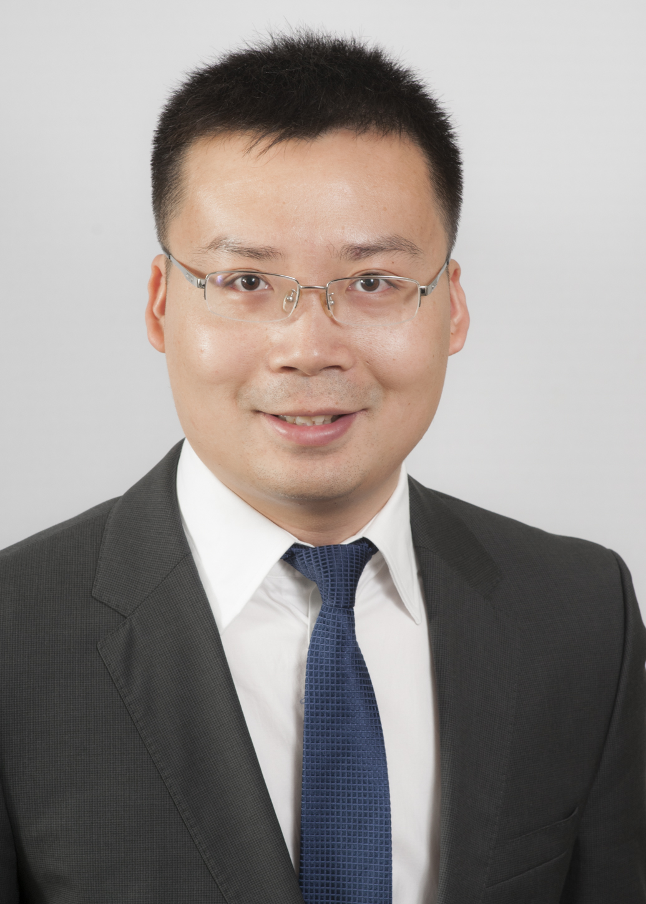 |
Zichun Zhong
Associate Professor
Department of Computer Science
Wayne State University
Tel: 313-577-9530 (office)
Fax: 313-577-6868
Email: zichunzhong "at" wayne.edu
Office: 5057 Woodward Ave. (Maccabees Building), Suite 14109.2, Detroit, Michigan, 48202
Computer Modeling and Imaging Visualization Lab: 5057 Woodward Ave. (Maccabees Building), 2209, Detroit, Michigan, 48202
Graphics and Imaging Lab: 5057 Woodward Ave. (Maccabees Building), 3104.5, Detroit, Michigan, 48202
|
Short Bio:
Research Interests:
Dr. Zhong's research interests focus on Geometric Modeling and Computing for Computer Graphics, Computer Vision, Visualization, Medical Image Processing, Machine Learning, and GPU Algorithms.
Prospective Students:
He is looking for self-motivated Master thesis and Ph.D. students to join his research group. Fellowship / RA / TA positions with full scholarships are available. If you are interested in working with him, please send him your CV and related projects / publications.
Selected Recent Publications: (Click here for the full list)
| |
| 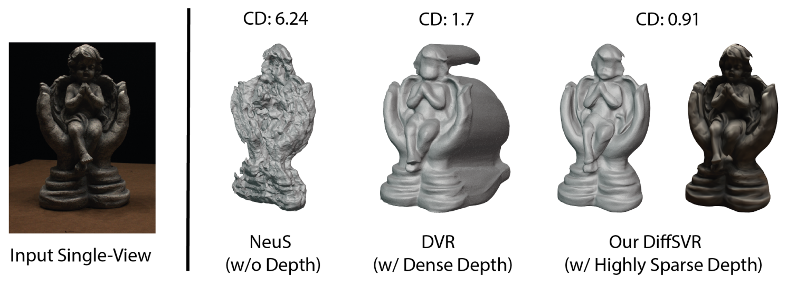 |
- Artem Komarichev, Jing Hua, Zichun Zhong, "DiffSVR: Differentiable Neural Implicit Surface Rendering for Single-View Reconstruction with Highly Sparse Depth Prior,"
Computer-Aided Design, Vol. 164, 103604, 2023. [Paper] [Supplement] [Code]
|
| |
| 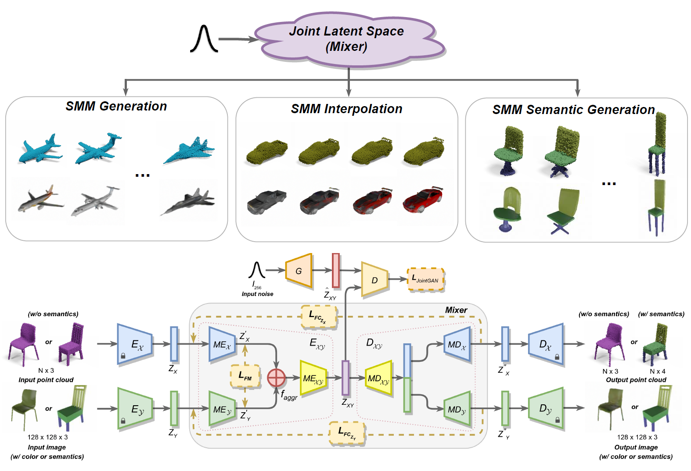 |
- Artem Komarichev, Jing Hua, Zichun Zhong, "Learning Geometry-Aware Joint Latent Space for Simultaneous Multimodal Shape Generation,"
Computer Aided Geometric Design (GMP 2022), Vol. 93, 102076, 2022. [Paper] [Supplement] [Code]
|
| |
| 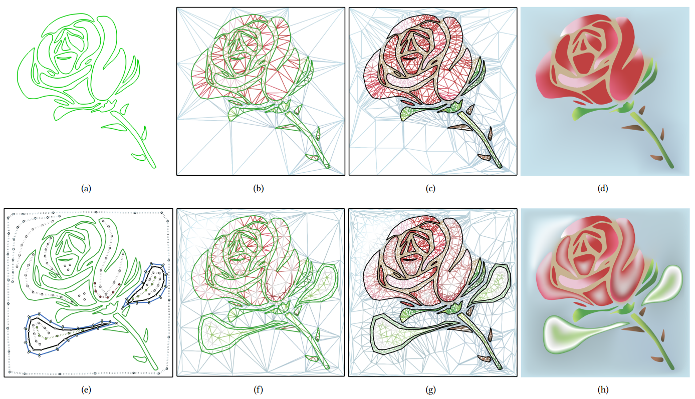 |
- Haikuan Zhu, Juan Cao, Yanyang Xiao, Zhonggui Chen, Zichun Zhong, Yongjie Jessica Zhang, "TCB-Spline-Based Image Vectorization,"
ACM Transactions on Graphics (Presented in SIGGRAPH 2022), Vol. 41, Issue 3, Article No. 34, 2022. [Paper] [Supplement] [Video]
|
| |
| 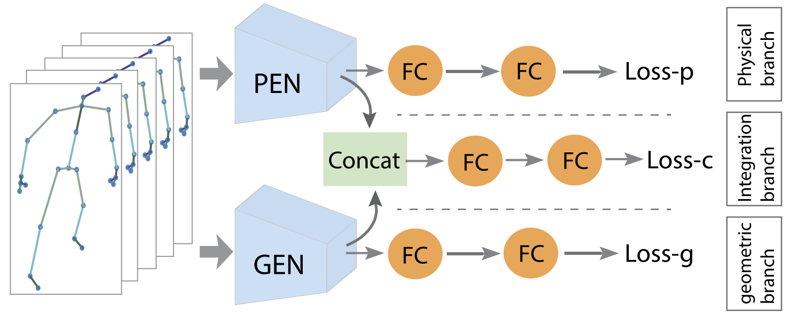 |
- Guoli Yan, Michelle Hua, Zichun Zhong, "Multi-Derivative Physical and Geometric Convolutional Embedding Networks for Skeleton-Based Action Recognition,"
Computer Aided Geometric Design (GMP 2021), Vol. 86, 101964, 2021. [Paper]
|
| |
| 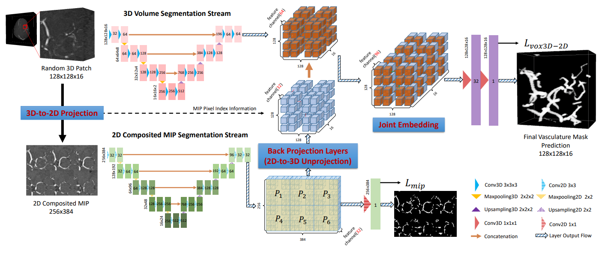 |
- Yifan Wang, Guoli Yan, Haikuan Zhu, Sagar Buch, Ying Wang, Ewart Mark Haacke, Jing Hua, Zichun Zhong, "VC-Net: Deep Volume-Composition Networks for Segmentation and Visualization of Highly Sparse and Noisy Image Data,"
IEEE Transactions on Visualization and Computer Graphics (TVCG) (IEEE SciVis 2020), Vol. 27, No. 2, pp. 1301 - 1311, 2021. [Paper] [Supplement] [Code]
|
| |
| 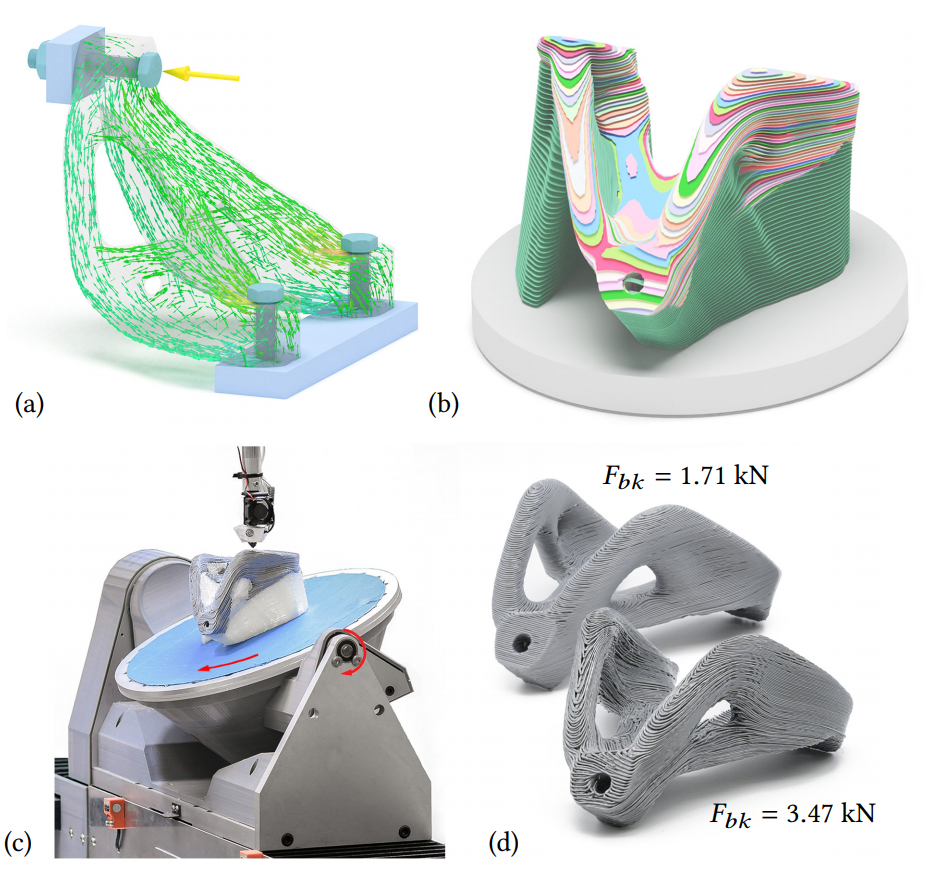 |
- Guoxin Fang, Tianyu Zhang, Sikai Zhong, Xiangjia Chen, Zichun Zhong, Charlie C.L. Wang, "Reinforced FDM: Multi-Axis Filament Alignment with Controlled Anisotropic Strength,"
ACM Transactions on Graphics (SIGGRAPH Asia 2020), Vol. 39, Issue 6, Article No. 204, 2020. [Paper] [Project] [Code]
|
| |
| 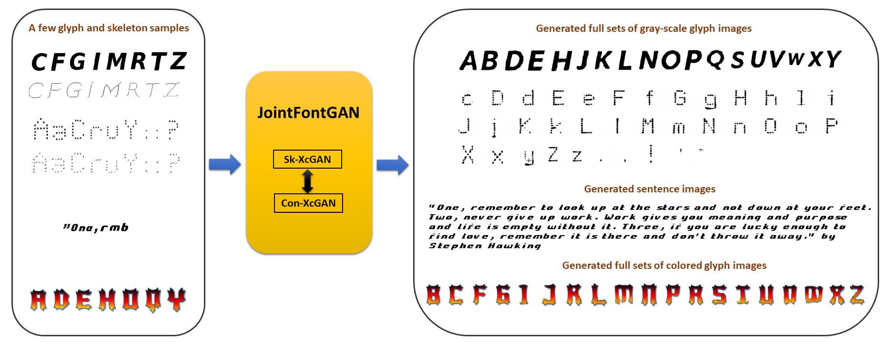 |
- Yankun Xi, Guoli Yan, Jing Hua, Zichun Zhong, "JointFontGAN: Joint Geometry-Content GAN for Font Generation via Few-Shot Learning,"
ACM Multimedia (MM), 2020. [Paper] [Supplement] [Code]
|
| |
| 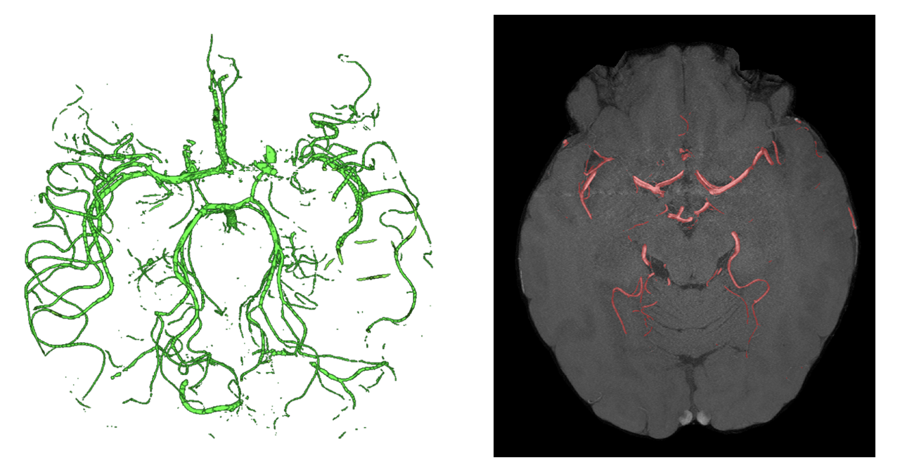 |
- Yifan Wang, Guoli Yan, Haikuan Zhu, Sagar Buch, Ying Wang, Ewart Mark Haacke, Jing Hua, Zichun Zhong, "JointVesselNet: Joint Volume-Projection Convolutional Embedding Networks for 3D Cerebrovascular Segmentation,"
The International Conference on Medical Image Computing and Computer Assisted Intervention (MICCAI), 2020. [Paper] [Code]
|
| |
| 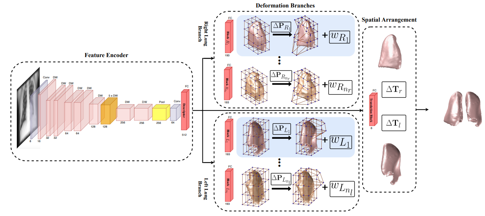 |
- Yifan Wang, Zichun Zhong, Jing Hua, "DeepOrganNet: On-the-Fly Reconstruction and Visualization of 3D / 4D Lung Models from Single-View Projections by Deep Deformation Network,"
IEEE Transactions on Visualization and Computer Graphics (TVCG) (IEEE SciVis 2019), Vol. 26, No. 1, pp. 960 - 970, 2020. [Paper]
|
| |
| 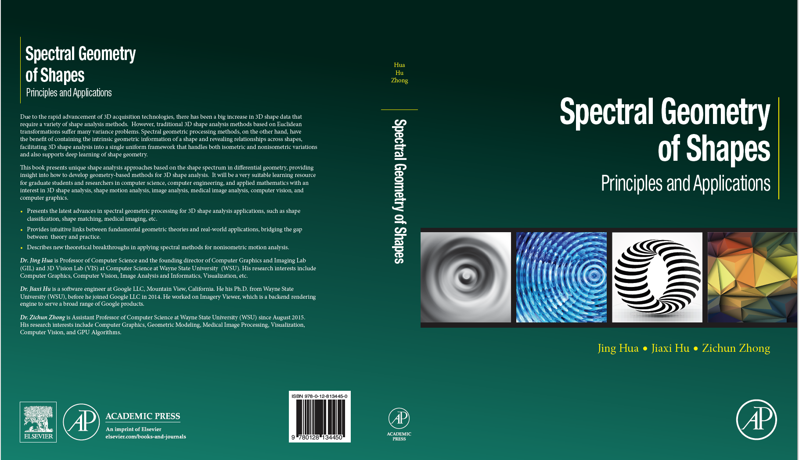 |
- Jing Hua, Jiaxi Hu, Zichun Zhong, "Spectral Geometry of Shapes: Principles and Applications,"
Academic Press, Elsevier, 2019. [Book]
|
| |
| 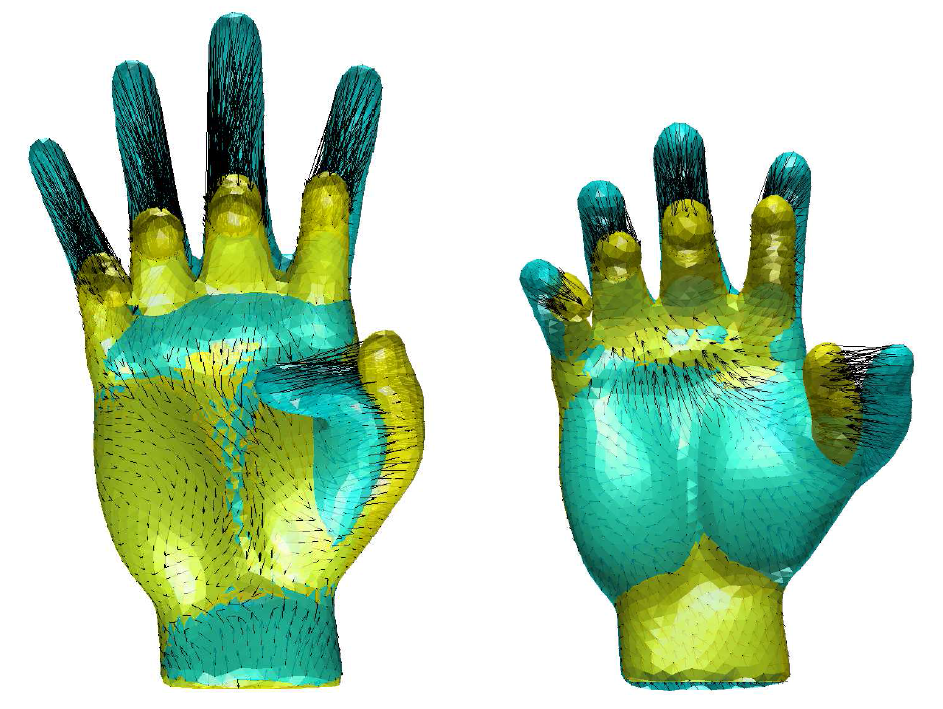 |
- Hajar Hamidian, Zichun Zhong, Farshad Fotouhi, Jing Hua, "Surface Registration with Eigenvalues and Eigenvectors,"
IEEE Transactions on Visualization and Computer Graphics (TVCG), 2019. [Paper]
|
| |
| 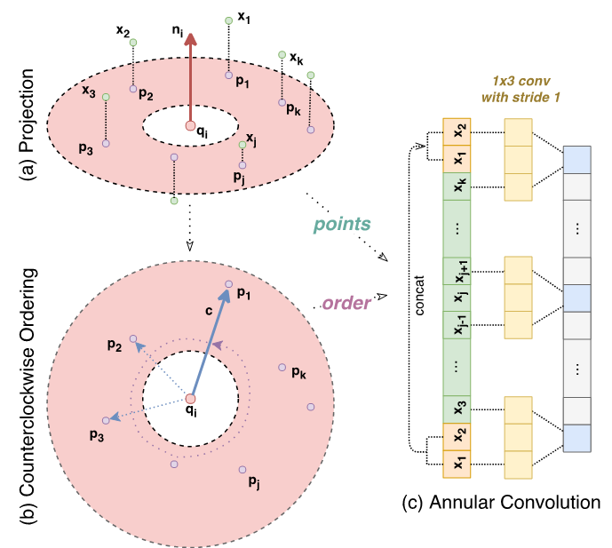 |
- Artem Komarichev, Zichun Zhong, Jing Hua, "A-CNN: Annularly Convolutional Neural Networks on Point Clouds,"
IEEE Conference on Computer Vision and Pattern Recognition (CVPR), Long Beach, CA, June 2019. [Paper] [Code] [Video]
|
| |
| 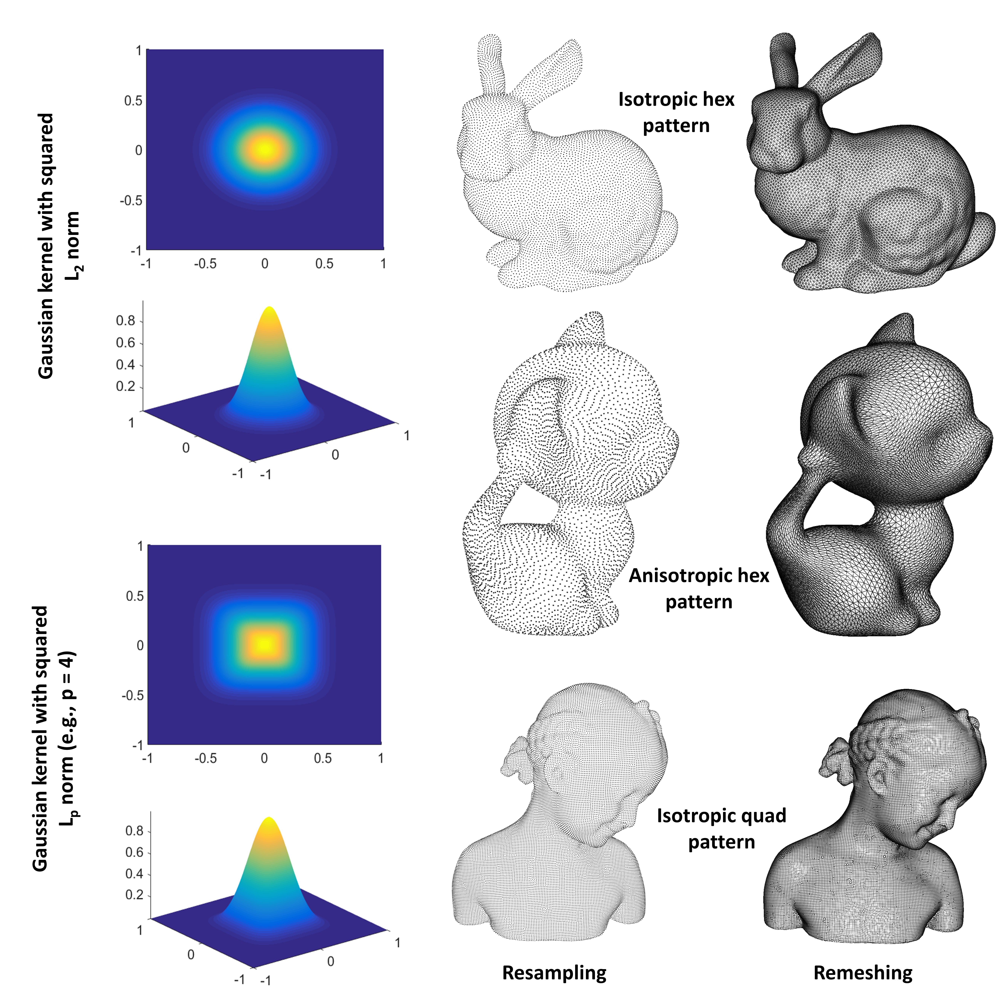 |
- Sikai Zhong, Zichun Zhong, Jing Hua, "Surface Reconstruction by Parallel and Unified Particle-Based Resampling from Point Clouds,"
Computer Aided Geometric Design (GMP 2019), Vol. 71, pp. 43 - 62, 2019. [Paper] [Data]
|
| |
| 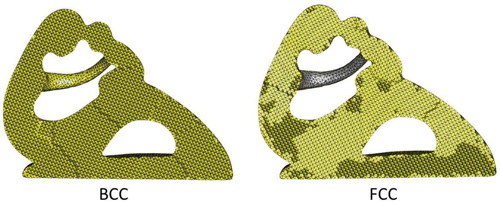 |
- Saifeng Ni, Zichun Zhong, Jin Huang, Wenping Wang, Xiaohu Guo, "Field-Aligned and Lattice-Guided Tetrahedral Meshing,"
Computer Graphics Forum (SGP 2018), Vol. 37, No. 5, pp. 161 - 172, 2018. [Paper] [Video]
|
| |
 |
- Zichun Zhong, Wenping Wang, Bruno Lévy, Jing Hua, Xiaohu Guo, "Computing a High-Dimensional Euclidean Embedding from an Arbitrary Smooth Riemannian Metric,"
ACM Transactions on Graphics (SIGGRAPH 2018), Vol. 37, Issue 4, Article No. 62, 2018. [Paper] [Appendix] [Video]
|
| |
| 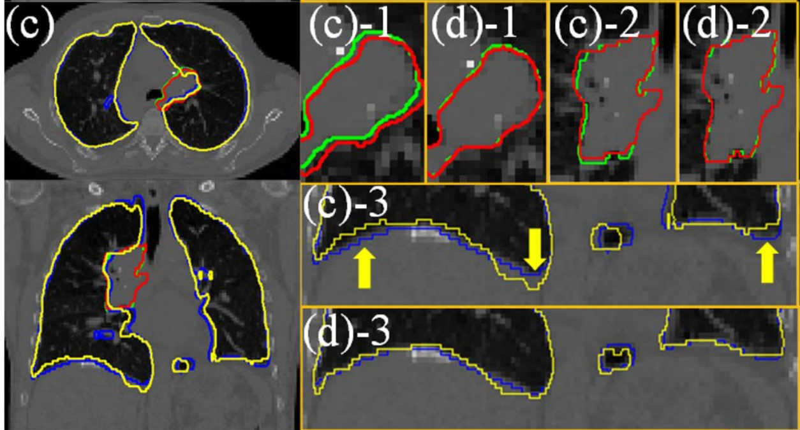 |
- Haibin Chen, Zichun Zhong, Yiwei Yang, Jiawei Chen, Linghong Zhou, Xin Zhen, Xuejun Gu, "Internal Motion Estimation by Internal-external Motion Modeling for Lung Cancer Radiotherapy,"
Scientific Reports - Nature, Vol. 8, Article number: 3677, 2018. [Paper]
|
| |
| 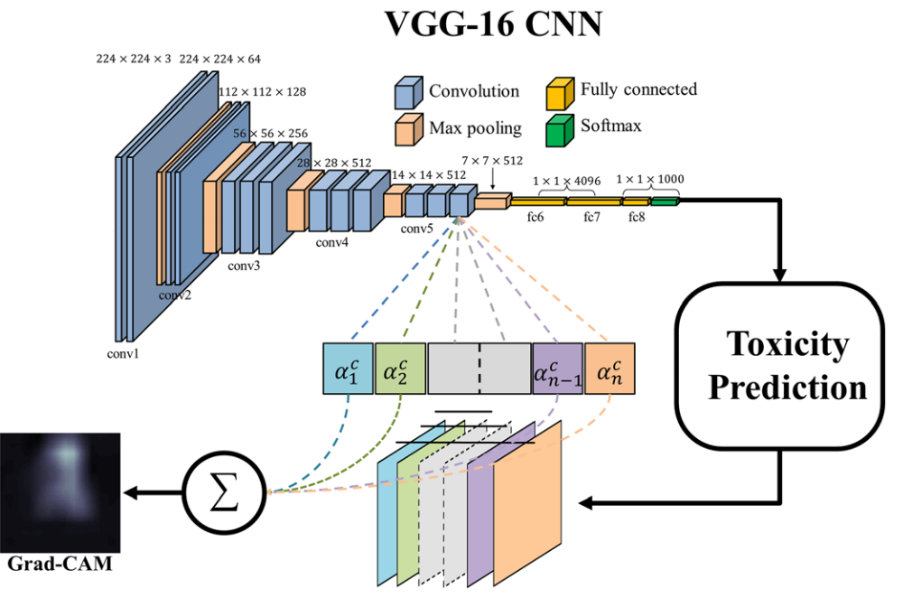 |
- Xin Zhen, Jiawei Chen, Zichun Zhong, Brian Hrycushko, Linghong Zhou, Steve Jiang, Kevin Albuquerque, Xuejun Gu, "Deep Convolutional Neural Network with Transfer Learning for Rectum Toxicity Prediction in Cervical Cancer Radiotherapy: A Feasibility Study,"
Physics in Medicine and Biology (PMB), Vol. 62, No. 21, pp. 8246 - 8263, 2017 (Editor's Choice). [Paper]
|
| |
| 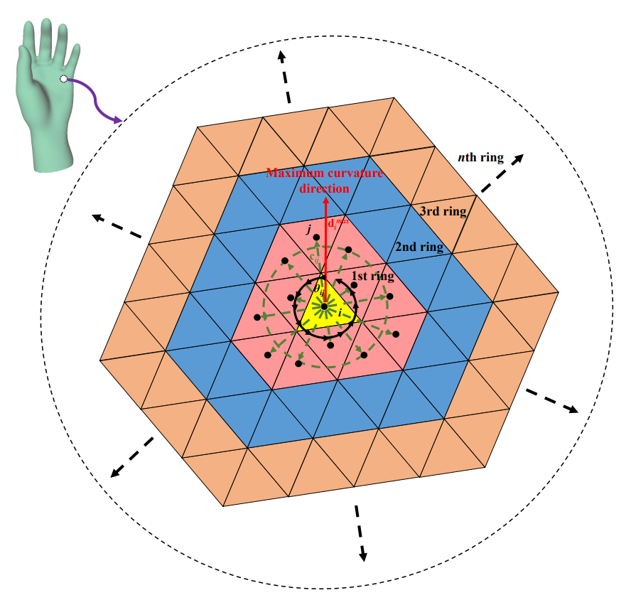 |
- Haotian Xu, Ming Dong, Zichun Zhong, "Directionally Convolutional Networks for 3D Shape Segmentation,"
IEEE International Conference on Computer Vision (ICCV), pp. 2698 - 2707, Venice, Italy, October 2017. [Paper]
|
| |
| 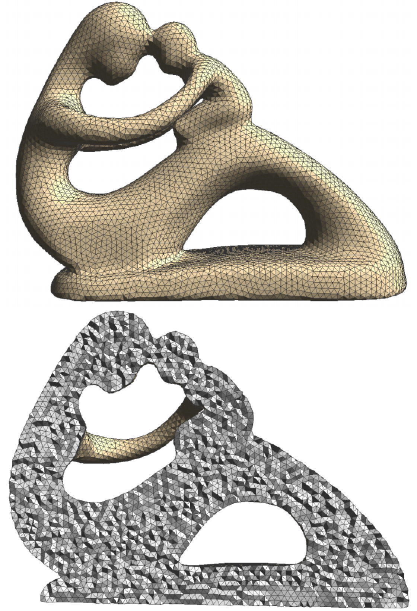 |
- Saifeng Ni, Zichun Zhong, Yang Liu, Wenping Wang, Zhonggui Chen, Xiaohu Guo, "Sliver-Suppressing Tetrahedral Mesh Optimization with Gradient-Based Shape Matching Energy,"
Computer Aided Geometric Design (GMP 2017), Vol. 52-53, pp. 247 - 261, 2017. [Paper]
|
| |
| 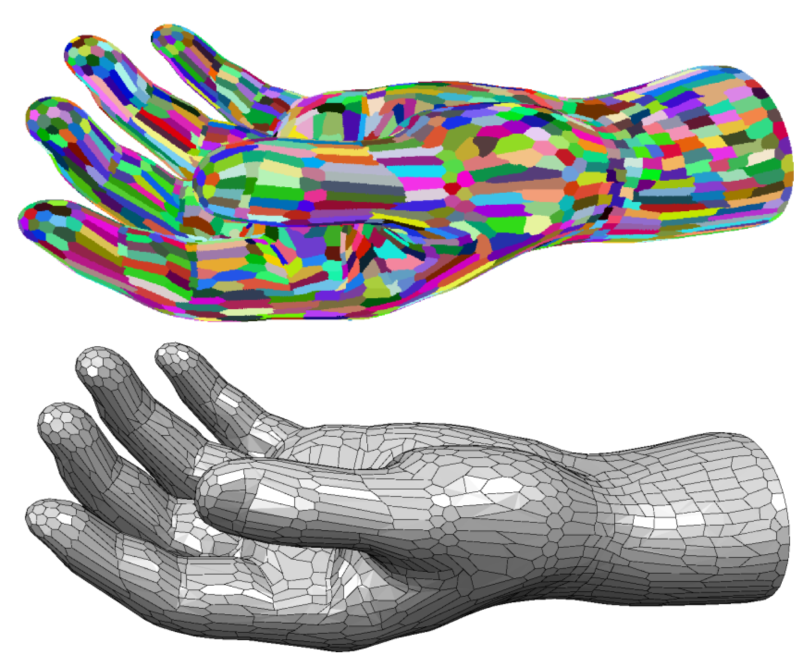 |
- Yiqi Cai, Xiaohu Guo, Yang Liu, Wenping Wang, Weihua Mao, Zichun Zhong, "Surface Approximation via Asymptotic Optimal Geometric Partition,"
IEEE Transactions on Visualization and Computer Graphics (TVCG), Vol. 23, No. 12, pp. 2613 - 2626, 2017. [Paper]
|
| |
| 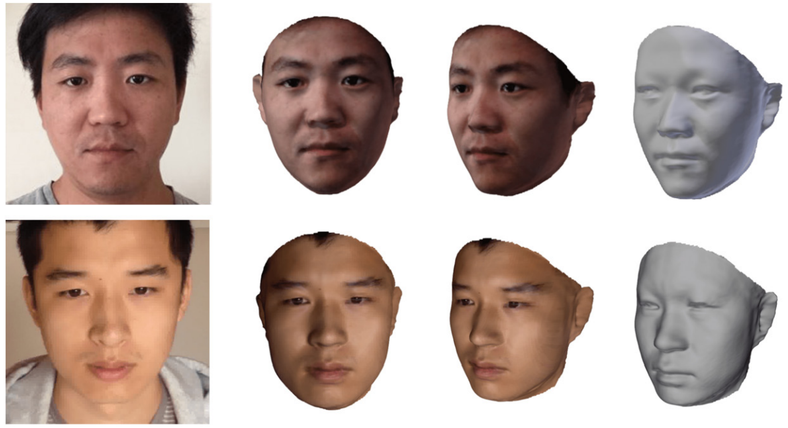 |
- Hai Jin, Xun Wang, Zichun Zhong, Jing Hua, "Robust 3D Face Modeling and Reconstruction from Frontal and Side Images,"
Computer Aided Geometric Design, Vol. 50, pp. 1 - 13, 2017. [Paper]
|
| |
| 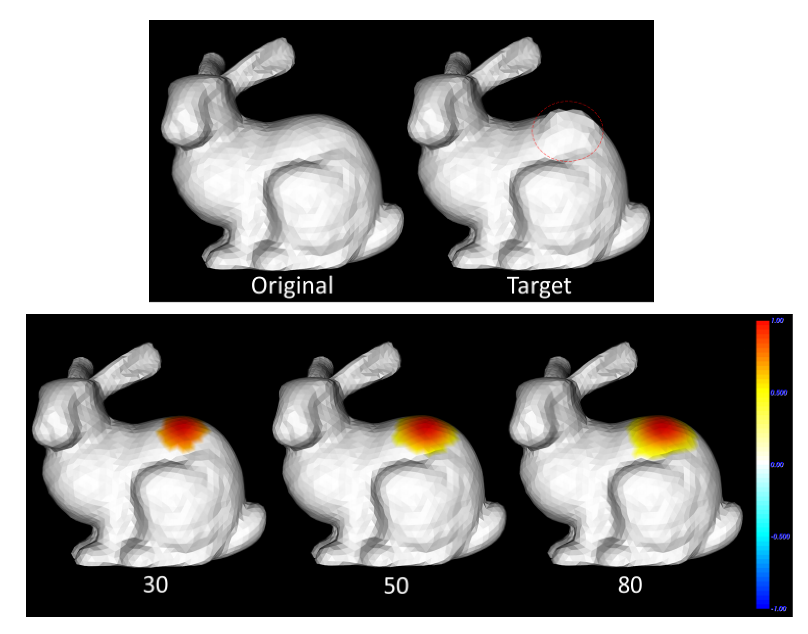 |
- Jiaxi Hu, Hajar Hamidian, Zichun Zhong, Jing Hua, "Visualization of Shape Deformations by Variation of Geometric Spectrum,"
IEEE Transactions on Visualization and Computer Graphics (TVCG) (IEEE SciVis 2016), Vol. 23, No. 1, pp. 721 - 730, 2017. [Paper]
|
| |
| 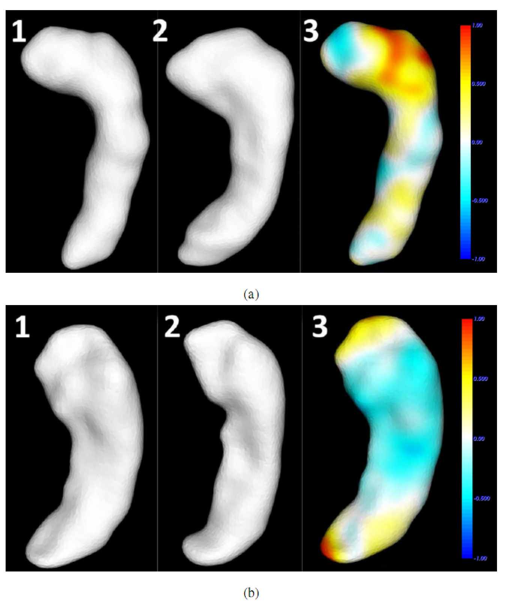 |
- Hajar Hamidian, Jiaxi Hu, Zichun Zhong, Jing Hua, "Quantifying Shape Deformations by Variation of Geometric Spectrum,"
The 19th International Conference on Medical Image Computing and Computer Assisted Intervention (MICCAI), Athens, Greece, October 2016. [Paper]
|
| |
| 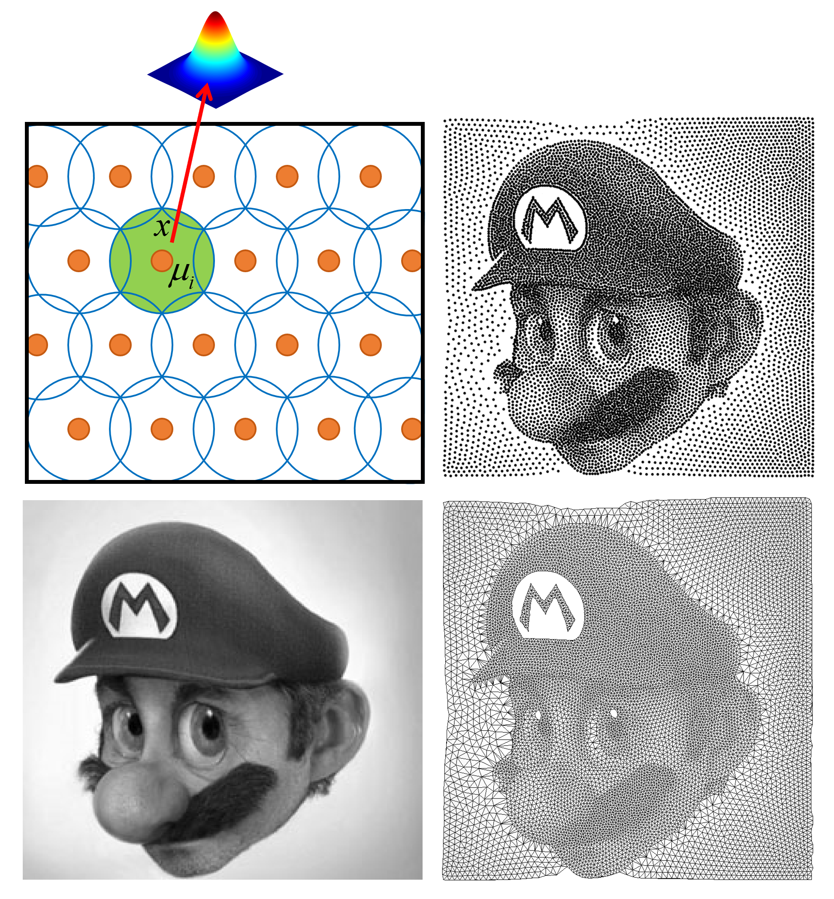 |
- Zichun Zhong, Jing Hua, "Kernel-Based Adaptive Sampling for Image Reconstruction and Meshing,"
Computer Aided Geometric Design (GMP 2016), Vol. 43, pp. 68 - 81, 2016. [Paper]
|
| |
| 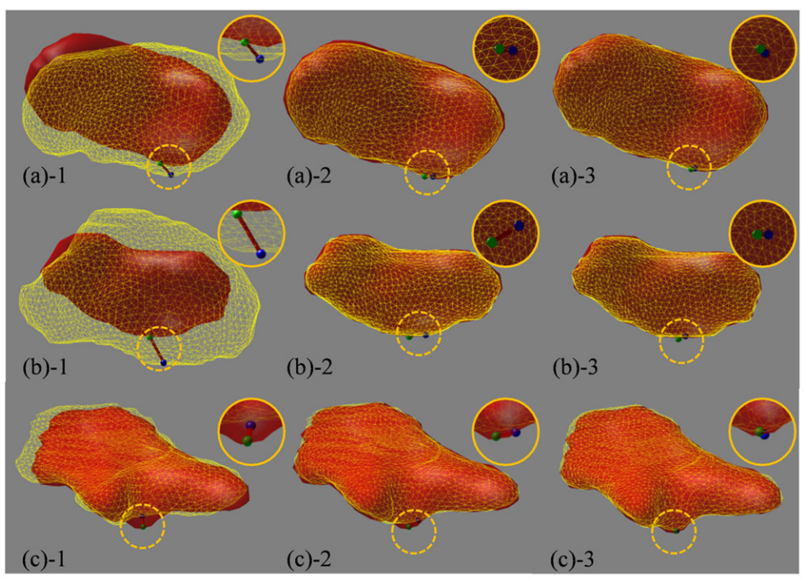 |
- Haibin Chen, Zichun Zhong, Yuliang Liao, Arnold Pompoš, Brian Hrycushko, Kevin Albuquerque, Xin Zhen, Linghong Zhou, Xuejun Gu, "A Non-rigid Point Matching Method with Local Topology Preservation for Accurate Bladder Dose Summation in High Dose Rate Cervical Brachytherapy,"
Physics in Medicine and Biology (PMB), Vol. 61, No. 3, pp. 1217 - 1237, 2016. [Paper]
|
| |
| 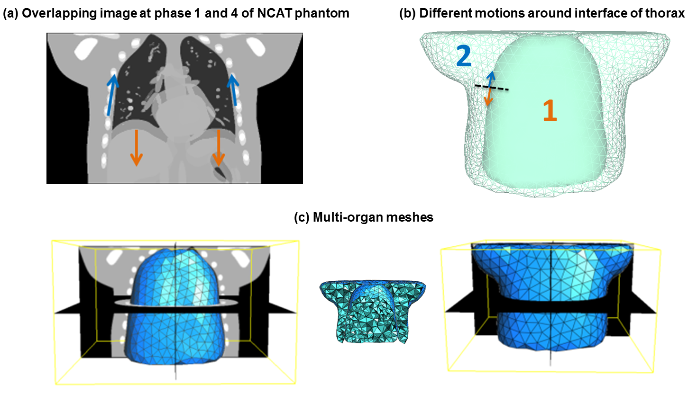 |
- Zichun Zhong, Xuejun Gu, Weihua Mao, Jing Wang, "4D Cone-Beam CT Reconstruction Using Multi-Organ Meshes for Sliding Motion Modeling,"
Physics in Medicine and Biology (PMB), Vol. 61, No. 3, pp. 996 - 1020, 2016. [Paper]
|
| |
| 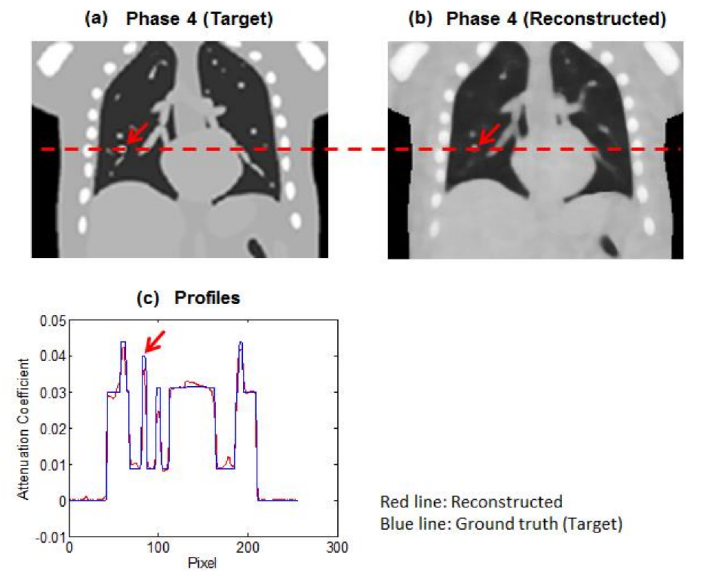 |
- Zichun Zhong, Xuejun Gu, Weihua Mao, Xiaohu Guo, Jing Wang, "GPU-Based 4D Cone-Beam CT Reconstruction by Mesh Method,"
The 13th International Meeting on Fully Three-Dimensional Image Reconstruction in Radiology and Nuclear Medicine (FULLY3D), 2015 (Oral Presentation, Top 2 with GPU Award). [Paper]
|
| |
| 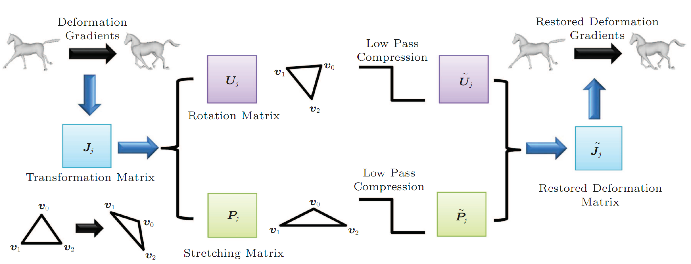 |
- Chao Wang, Yang Liu, Xiaohu Guo, Zichun Zhong, Binh Huy Le, Zhigang Deng, "Spectral Animation Compression,"
Journal of Computer Science and Technology (CVM 2015), Vol. 30, No. 3, pp. 540 - 552, 2015. [Paper]
|
| |
| 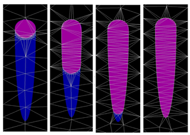 |
- Yiqi Cai, Xiaohu Guo, Zichun Zhong, Weihua Mao, "Dynamic Meshing for Deformable Image Registration,"
Computer-Aided Design (SPM 2014), Vol. 58, pp. 141 - 150, 2015. [Paper]
|
| |
| 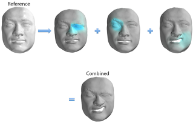 |
- Zhichao Huang, Junfeng Yao, Zichun Zhong, Yang Liu, Xiaohu Guo, "Sparse Localized Decomposition of Deformation Gradients,"
Computer Graphics Forum (PG 2014), Vol. 33, No. 7, pp. 239 - 248, 2014. [Paper]
|
| |
| 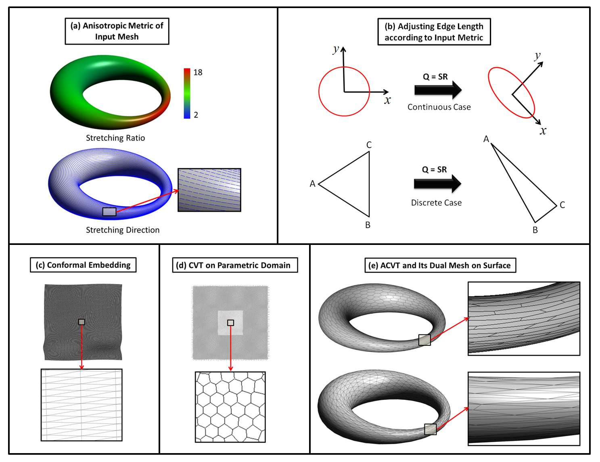 |
- Zichun Zhong, Liang Shuai, Miao Jin, Xiaohu Guo, "Anisotropic Surface Meshing with Conformal Embedding,"
Graphical Models (GMP 2014), Vol. 76, No. 5, pp. 468 - 483, 2014. [Paper]
|
| |
| 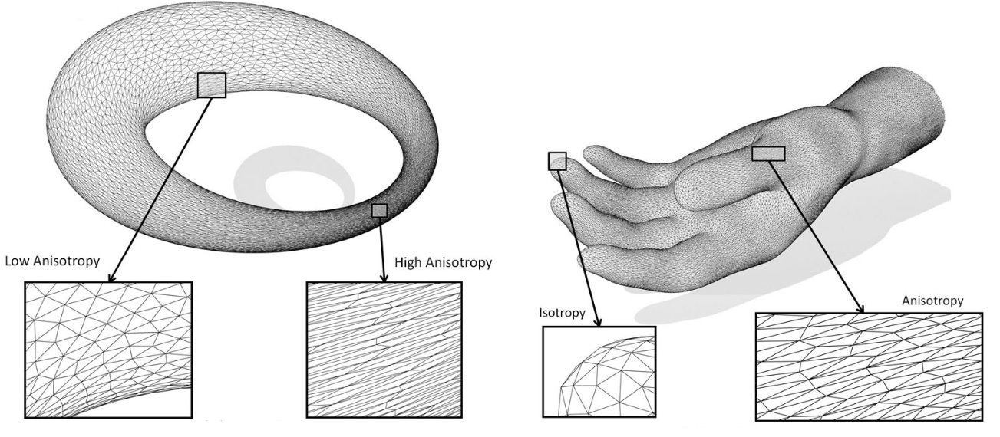 |
- Zichun Zhong, Xiaohu Guo, Wenping Wang, Bruno Lévy, Feng Sun, Yang Liu, Weihua Mao, "Particle-Based Anisotropic Surface Meshing,"
ACM Transactions on Graphics (SIGGRAPH 2013), Vol. 32, Issue 4, Article No. 99, July 2013. [Project Website] [UTD-News]
|
|
Teaching:
Selected Honors:
- Best Reviewers, ACM Multimedia Conference 2020, October 2020
- Award for Excellence in Teaching, College of Engineering, Wayne State University, April 2020
- Outstanding Reviewers, Physics in Medicine and Biology, January 2020
- Faculty Research Excellence Award, College of Engineering, Wayne State University, April 2019
- CAREER Award, National Science Foundation (NSF), February 2019
- Science Council Session Award, AAPM 2017, Denver, Colorado, August 2017
- CRII Award, National Science Foundation (NSF), July 2017
- Outstanding Reviewer, Digital Signal Processing - Elsevier, November 2016
- GPU Award for Paper: "GPU-Based 4D Cone-Beam CT Reconstruction by Mesh Method", The 13th FULLY 3D, Newport, Rhode Island, June 2015
- Certificate of Academic Excellence, Department of Computer Science, The University of Texas at Dallas, Richardson, Texas, December 2013
- Media Coverage: "Anisotropic Surface Meshing" research posted as top news on UTD website November 2013
- Science Council Session Award, AAPM 2013, Indianapolis, Indiana, August 2013
- Volunteer Recognition - Web Development, ACM Multimedia Conference 2011, Scottsdale, Arizona, December 2011
- Excellent Student Leadership, The University of Electronic Science and Technology of China, Chengdu, China, 2006 - 2008
- Excellent Graduate of Sichuan Province, The University of Electronic Science and Technology of China, Chengdu, China, 2006
- Special and First Class of University Student Scholarship, The University of Electronic Science and Technology of China, Chengdu, China, 2002 - 2006
Professional Services:
- Conference Reviewer:
- The Conference on Computer Vision and Pattern Recognition (CVPR)
- International Conference on Computer Vision (ICCV)
- European Conference on Computer Vision (ECCV)
- AAAI Conference on Artificial Intelligence (AAAI)
- Conferences on Computer Graphics International (CGI)
- ACM International Conference on Multimedia (ACM MM)
- International Conference on Medical Image Computing and Computer Assisted Intervention (MICCAI)
- Geometric Modeling and Processing (GMP)
- The Symposium on Solid and Physical Modeling (SPM)
- International Conference on 3D Vision
- IEEE Pacific Visualization Symposium (PacificVis)
- Computational Visual Media (CVM)
- International Conference on Computer Animation and Social Agents (CASA)
- International Conference on Virtual Reality and Visualization (ICVRV)
- ACM International Conference on Multimedia Asia (ACM MM Asia)
- Journal Reviewer:
- ACM Transactions on Graphics (TOG)
- IEEE Transactions on Visualization and Computer Graphics (TVCG)
- IEEE Transactions on Multimedia
- Computer Graphics Forum (CGF)
- Computer-Aided Design (CAD)
- Computer Aided Geometric Design (CAGD)
- Computational Visual Media (CVM)
- The Visual Computer (TVCJ)
- Journal of Multimedia (JMM)
- Multimedia Tools and Applications (MTAP)
- Multimedia Systems (MMSJ)
- International Journal of Computers and Applications (TJCA)
- IEEE Transactions on Medical Imaging (TMI)
- Physics in Medicine and Biology (PMB)
- Artificial Intelligence in Medicine
- Journal of X-Ray Science and Technology
- Current Medical Imaging Reviews (CMIR)
- Digital Signal Processing - Elsevier
- Measurement Science and Technology - IOPscience
- Editorial Board Member:
- Associate Editor: Elsevier Graphical Models (2023 -)
- Guest Associate Editor: Medical Physics (2015 - )
- Conference Organization Committee:
- Local Arrangements Committee, International Conference on Autonomous Agents and Multiagent Systems (AAMAS) 2025, Detroit, Michigan
- Web Developer and Administrator, ACM International Conference on Multimedia (ACM MM) 2011, Scottsdale, Arizona
- Conference PC Member:
- Solid and Physical Modeling (SPM) 2017
- AAAI Conference on Artificial Intelligence (AAAI) 2023, 2024
- Conferences on Computer Graphics International (CGI) 2023
- IEEE Pacific Visualization Symposium (IEEE PacificVis) 2021, 2022, 2023
- ACM International Conference on Multimedia Asia (ACM MM Asia) 2019
- International Workshop on Interactive and Spatial Computing (IWISC) 2018, 2019
Students:
- Current Ph.D. Students:
- Current B.S. Students:
- Lavender Calhoun (ROEU Awardee, Undergraduate Dean's List, Fall 2022 ~ Winter 2023)
- Haeul Lee (Research Intern, Fall 2022 ~ Winter 2023)
- Alumni:
- Artem Komarichev (Ph.D. at WSU 2022) - Senior Research Scientist and Team Lead, ADASE 3DDL at Skoltech
- Yifan Wang (Ph.D. at WSU 2022) - Research Scientist, Samsung NEON
- Yankun Xi (M.S. at WSU 2021)
- Kaiyue Zhou (M.S. at WSU 2019, Master of Science Dean's List) - Postdoc, Tsinghua University
- Mohammad Abdollahi (M.S. at WSU 2018) - Advanced Analytics Tech Lead, General Motors
- Iniyavel Rajeswaran (ROEU Awardee, UROP Awardee, Undergraduate Dean's List, Fall 2021 ~ Winter 2022)
- Veronica Dean (ROEU Awardee, Undergraduate Dean's List, Fall 2021 ~ Winter 2022) - Process Engineer, General Motors
- Kyle Carr (B.S. at WSU, ROEU Awardee, Undergraduate Dean's List, Fall 2020 ~ Winter 2021) - Software Engineer, General Motors
- Ayah Awadallah (B.S. at WSU, Honors Thesis, Undergraduate Dean's List, Fall 2020 ~ Winter 2021) - Software Engineer, Ford Motor Company
- Bofan Zheng (B.S. at WSU, Visiting Student from Chang Gung University, Taiwan, Summer 2019)
- Bandhanpreet Kaur (B.S. at WSU, ROEU Awardee, Undergraduate Dean's List, Fall 2018 ~ Winter 2019)
- Yashwant Kondapalli (B.S. at WSU, ROEU Awardee, Undergraduate Dean's List, Fall 2018 ~ Winter 2019)
- Hussein Mehdi (B.S. at WSU, ROEU Awardee, Undergraduate Dean's List, Fall 2017 ~ Winter 2018)
|
| Last Update: March 2023 |